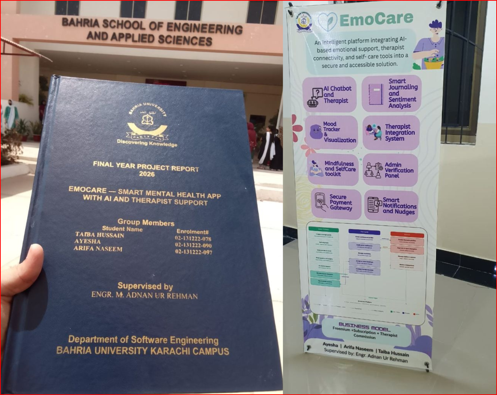

01 / 14

Final Year Project (FYP)
EmoCare, Smart Mental Health App with AI & Therapist Support
An AI driven mental health platform combining CBT-style support, verified therapist connectivity, secure in-app payment, and mood analytics. Built on a three-tier architecture, an Android client, an ASP.NET Core backend, and a Python FastAPI AI microservice, with a two-stage pipeline: a fine-tuned BERT classifier for emotional-state detection, followed by an LLM call for CBT-aligned responses, with a hard crisis-safety branch built in.
Mental Health
Android (Java)
ASP.NET Core
FastAPI
BERT
Firebase Firestore
Stripe